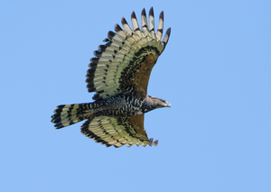
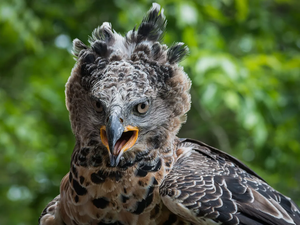
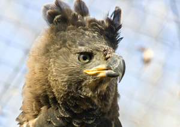

El Águila Coronada
El águila coronada (Stephanoaetus coronatus) en tipo de ave africana de gran tamaño que se encuentra en bosques y montañas de África subsahariana. Esta se destaca por su el gran tamaño de sus alas, las cuales pueden ser de 2 metros, y una cresta distintiva en forma de abanico en la parte posterior de la cabeza.Esta caza mamíferos medianos a grandes, aves pequeñas y reptiles, y se alimenta principalmente de monos, antílopes y pequeños carnívoros. Aunque no está en peligro de extinción, se enfrenta a amenazas como la perdida de su habitat y la caza furtiva. Se reproducen anidando en árboles altos y participan tanto el macho como la hembra en la incubación y alimentación de las crias.